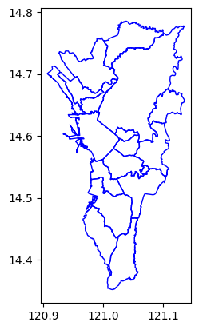
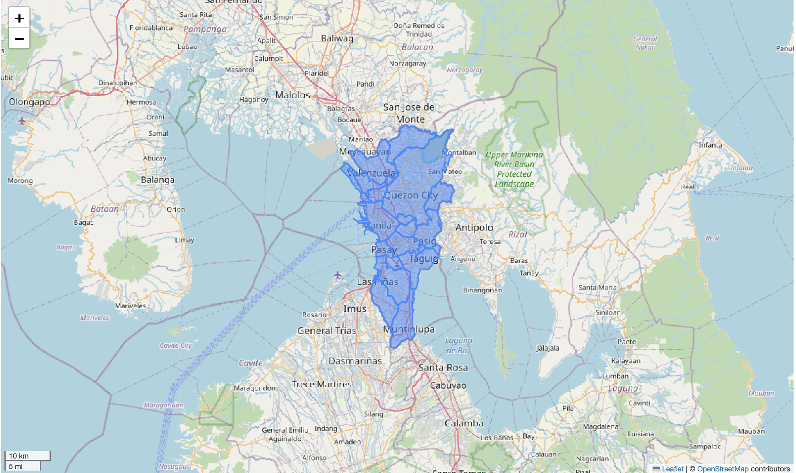
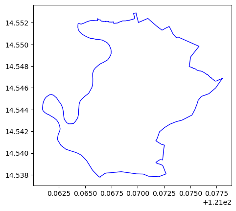
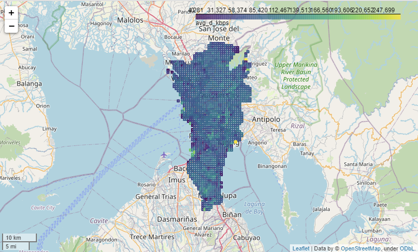
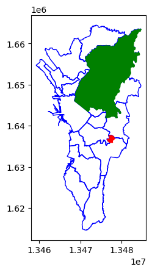
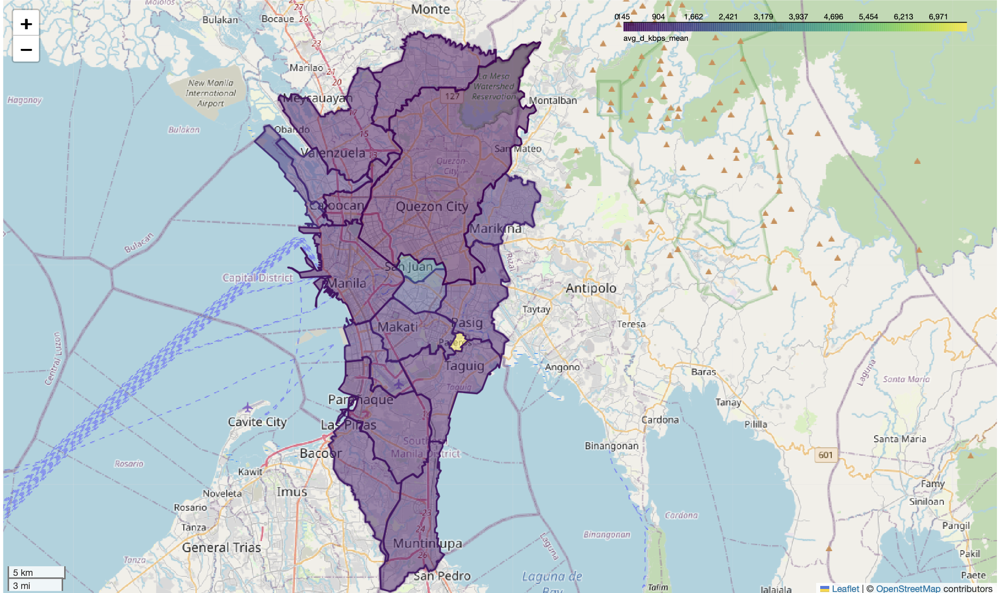

import geopandas as gpd
import matplotlib.pyplot as plt
import pandas as pd
import geowrangler.area_zonal_stats as azsExploring Internet Speeds with Ookla
A simple use case demo for using geowrangler modules to find the Philippine provinces/towns with the slowest/fastest internet speeds.

Summary
This Use Case Demo shows how to use the geowrangler.datasets.ookla and the geowrangler.area_zonal_stats modules to find the slowest/fastest internet speeds within an area or region of interest.
How geowrangler can make this process easier
Geowrangler can:
- Validate your geodataframes
- Help you download Ookla data (internet speed)
- Generate zonal stats for your province/town
What you need to do
- Get your AOIs (areas of interest) - get the boundaries of your administrative regions
- Download ookla data
- Validate AOIs and ookla data
- Generate zonal Stats
- Analyze and find fastest/slowest internet speeds
Tutorial
Import libraries
Lets start by importing the required libraries
Download Admin Areas
Next, we get the administrative boundaries geodataset using data from Humanitarian Data Exchange
Set Region Filter
Important
Setting the region filter to None will compute the zonal stats for the whole Philippines and can take a lot longer than for a region.
Set the REGION_FILTER to your Region (or None for the whole Philippines).
# REGION_FILTER = None # All regions
REGION_FILTER = "National Capital Region (NCR)" # limit to 1 to speed up processinDownload the geodataset containing the admin areas of your country.
Here we are using the data for the Philippines.
phl_admin_file = "phl_adminboundaries"
phl_admin_zip = f"{phl_admin_file}.zip"
# shapefiles
phl_admin_link = f"https://data.humdata.org/dataset/caf116df-f984-4deb-85ca-41b349d3f313/resource/12457689-6a86-4474-8032-5ca9464d38a8/download/phl_adm_psa_namria_20231106_shp.zip"Download the zipped file. Depending on your internet connection, it can take several minutes.
![ ! -e ../data/{phl_admin_zip} ] && curl -L -o ../data/{phl_admin_zip} {phl_admin_link}CPU times: user 901 µs, sys: 2.68 ms, total: 3.59 ms
Wall time: 279 ms!mkdir -p ../data/{phl_admin_file}main_file = "phl_admbnda_adm3_psa_namria_20231106"
phl_admin3_shp = f"../data/{phl_admin_file}/{main_file}.shp"![ ! -e {phl_admin3_shp} ] && unzip -d ../data/{phl_admin_file} ../data/{phl_admin_zip}CPU times: user 907 µs, sys: 2.5 ms, total: 3.41 ms
Wall time: 279 msLoad the admin area geo dataset.
In our example we are loading the .shp or shape file as a geopandas dataframe.
print(f"loading {phl_admin3_shp}")
admin3 = gpd.read_file(phl_admin3_shp)loading ../data/phl_adminboundaries/phl_admbnda_adm3_psa_namria_20231106.shp
CPU times: user 245 ms, sys: 68.7 ms, total: 313 ms
Wall time: 327 msadmin3.head()| ADM3_EN | ADM3_PCODE | ADM2_EN | ADM2_PCODE | ADM1_EN | ADM1_PCODE | ADM0_EN | ADM0_PCODE | date | validOn | validTo | ADM3_REF | ADM3ALT1EN | Shape_Leng | Shape_Area | AREA_SQKM | geometry | |
|---|---|---|---|---|---|---|---|---|---|---|---|---|---|---|---|---|---|
| 0 | Adams | PH0102801 | Ilocos Norte | PH01028 | Region I (Ilocos Region) | PH01 | Philippines (the) | PH | 2022-11-09 | 2023-11-06 | 0000/00/00 | None | None | 0.423604 | 0.009506 | 111.143026 | POLYGON ((120.96915 18.51012, 120.95867 18.463... |
| 1 | Bacarra | PH0102802 | Ilocos Norte | PH01028 | Region I (Ilocos Region) | PH01 | Philippines (the) | PH | 2022-11-09 | 2023-11-06 | 0000/00/00 | None | None | 0.309136 | 0.004725 | 55.303195 | POLYGON ((120.66821 18.28705, 120.66441 18.282... |
| 2 | Badoc | PH0102803 | Ilocos Norte | PH01028 | Region I (Ilocos Region) | PH01 | Philippines (the) | PH | 2022-11-09 | 2023-11-06 | 0000/00/00 | None | None | 0.599295 | 0.006880 | 80.683970 | POLYGON ((120.47814 17.97717, 120.47816 17.977... |
| 3 | Bangui | PH0102804 | Ilocos Norte | PH01028 | Region I (Ilocos Region) | PH01 | Philippines (the) | PH | 2022-11-09 | 2023-11-06 | 0000/00/00 | None | None | 0.483066 | 0.009843 | 115.059041 | POLYGON ((120.81318 18.53457, 120.81358 18.533... |
| 4 | City of Batac | PH0102805 | Ilocos Norte | PH01028 | Region I (Ilocos Region) | PH01 | Philippines (the) | PH | 2022-11-09 | 2023-11-06 | 0000/00/00 | None | None | 0.613500 | 0.013493 | 158.123132 | POLYGON ((120.61242 18.10947, 120.612 18.10679... |
list(admin3.columns.values)['ADM3_EN',
'ADM3_PCODE',
'ADM2_EN',
'ADM2_PCODE',
'ADM1_EN',
'ADM1_PCODE',
'ADM0_EN',
'ADM0_PCODE',
'date',
'validOn',
'validTo',
'ADM3_REF',
'ADM3ALT1EN',
'Shape_Leng',
'Shape_Area',
'AREA_SQKM',
'geometry']admin3.ADM1_EN.unique()array(['Region I (Ilocos Region)', 'Region II (Cagayan Valley)',
'Region III (Central Luzon)', 'Region IV-A (Calabarzon)',
'Region V (Bicol Region)', 'Region VI (Western Visayas)',
'Region VII (Central Visayas)', 'Region VIII (Eastern Visayas)',
'Region IX (Zamboanga Peninsula)', 'Region X (Northern Mindanao)',
'Region XI (Davao Region)', 'Region XII (Soccsksargen)',
'National Capital Region (NCR)',
'Cordillera Administrative Region (CAR)', 'Region XIII (Caraga)',
'Mimaropa Region',
'Bangsamoro Autonomous Region In Muslim Mindanao (BARMM)'],
dtype=object)Limit the admin regions to only 1 in order to make the process run faster.
The REGION FILTER is set in the Set Region Filter Section
if REGION_FILTER:
admin3 = admin3[admin3.ADM1_EN == REGION_FILTER]import matplotlib.pyplot as pltax = plt.axes()
ax = admin3.plot(ax=ax, facecolor="none", edgecolor="blue")

ax = plt.axes()
ax = admin3[admin3.ADM3_EN == "Pateros"].plot(ax=ax, facecolor="none", edgecolor="blue")CPU times: user 22.8 ms, sys: 1.43 ms, total: 24.2 ms
Wall time: 23.7 ms
admin3.crs<Geographic 2D CRS: EPSG:4326>
Name: WGS 84
Axis Info [ellipsoidal]:
- Lat[north]: Geodetic latitude (degree)
- Lon[east]: Geodetic longitude (degree)
Area of Use:
- name: World.
- bounds: (-180.0, -90.0, 180.0, 90.0)
Datum: World Geodetic System 1984 ensemble
- Ellipsoid: WGS 84
- Prime Meridian: Greenwichadmin3.total_boundsarray([120.90639543, 14.35172957, 121.13503641, 14.78529173])len(admin3)17Download Ookla data
Use the geowrangler.datasets.ookla module to explore and download ookla (internet speed) data
from geowrangler.datasets import ooklaList the publically available ookla datasets
ookla_dsets = ookla.list_ookla_files()
ookla_dsetsCPU times: user 34.2 ms, sys: 2.73 ms, total: 36.9 ms
Wall time: 639 ms{OoklaQuarter(type='fixed', year='2019', quarter='1'): '2019-01-01_performance_fixed_tiles.parquet',
OoklaQuarter(type='fixed', year='2019', quarter='2'): '2019-04-01_performance_fixed_tiles.parquet',
OoklaQuarter(type='fixed', year='2019', quarter='3'): '2019-07-01_performance_fixed_tiles.parquet',
OoklaQuarter(type='fixed', year='2019', quarter='4'): '2019-10-01_performance_fixed_tiles.parquet',
OoklaQuarter(type='fixed', year='2020', quarter='1'): '2020-01-01_performance_fixed_tiles.parquet',
OoklaQuarter(type='fixed', year='2020', quarter='2'): '2020-04-01_performance_fixed_tiles.parquet',
OoklaQuarter(type='fixed', year='2020', quarter='3'): '2020-07-01_performance_fixed_tiles.parquet',
OoklaQuarter(type='fixed', year='2020', quarter='4'): '2020-10-01_performance_fixed_tiles.parquet',
OoklaQuarter(type='fixed', year='2021', quarter='1'): '2021-01-01_performance_fixed_tiles.parquet',
OoklaQuarter(type='fixed', year='2021', quarter='2'): '2021-04-01_performance_fixed_tiles.parquet',
OoklaQuarter(type='fixed', year='2021', quarter='3'): '2021-07-01_performance_fixed_tiles.parquet',
OoklaQuarter(type='fixed', year='2021', quarter='4'): '2021-10-01_performance_fixed_tiles.parquet',
OoklaQuarter(type='fixed', year='2022', quarter='1'): '2022-01-01_performance_fixed_tiles.parquet',
OoklaQuarter(type='fixed', year='2022', quarter='2'): '2022-04-01_performance_fixed_tiles.parquet',
OoklaQuarter(type='fixed', year='2022', quarter='3'): '2022-07-01_performance_fixed_tiles.parquet',
OoklaQuarter(type='fixed', year='2022', quarter='4'): '2022-10-01_performance_fixed_tiles.parquet',
OoklaQuarter(type='fixed', year='2023', quarter='1'): '2023-01-01_performance_fixed_tiles.parquet',
OoklaQuarter(type='fixed', year='2023', quarter='2'): '2023-04-01_performance_fixed_tiles.parquet',
OoklaQuarter(type='fixed', year='2023', quarter='3'): '2023-07-01_performance_fixed_tiles.parquet',
OoklaQuarter(type='fixed', year='2023', quarter='4'): '2023-10-01_performance_fixed_tiles.parquet',
OoklaQuarter(type='fixed', year='2024', quarter='1'): '2024-01-01_performance_fixed_tiles.parquet',
OoklaQuarter(type='fixed', year='2024', quarter='2'): '2024-04-01_performance_fixed_tiles.parquet',
OoklaQuarter(type='mobile', year='2019', quarter='1'): '2019-01-01_performance_mobile_tiles.parquet',
OoklaQuarter(type='mobile', year='2019', quarter='2'): '2019-04-01_performance_mobile_tiles.parquet',
OoklaQuarter(type='mobile', year='2019', quarter='3'): '2019-07-01_performance_mobile_tiles.parquet',
OoklaQuarter(type='mobile', year='2019', quarter='4'): '2019-10-01_performance_mobile_tiles.parquet',
OoklaQuarter(type='mobile', year='2020', quarter='1'): '2020-01-01_performance_mobile_tiles.parquet',
OoklaQuarter(type='mobile', year='2020', quarter='2'): '2020-04-01_performance_mobile_tiles.parquet',
OoklaQuarter(type='mobile', year='2020', quarter='3'): '2020-07-01_performance_mobile_tiles.parquet',
OoklaQuarter(type='mobile', year='2020', quarter='4'): '2020-10-01_performance_mobile_tiles.parquet',
OoklaQuarter(type='mobile', year='2021', quarter='1'): '2021-01-01_performance_mobile_tiles.parquet',
OoklaQuarter(type='mobile', year='2021', quarter='2'): '2021-04-01_performance_mobile_tiles.parquet',
OoklaQuarter(type='mobile', year='2021', quarter='3'): '2021-07-01_performance_mobile_tiles.parquet',
OoklaQuarter(type='mobile', year='2021', quarter='4'): '2021-10-01_performance_mobile_tiles.parquet',
OoklaQuarter(type='mobile', year='2022', quarter='1'): '2022-01-01_performance_mobile_tiles.parquet',
OoklaQuarter(type='mobile', year='2022', quarter='2'): '2022-04-01_performance_mobile_tiles.parquet',
OoklaQuarter(type='mobile', year='2022', quarter='3'): '2022-07-01_performance_mobile_tiles.parquet',
OoklaQuarter(type='mobile', year='2022', quarter='4'): '2022-10-01_performance_mobile_tiles.parquet',
OoklaQuarter(type='mobile', year='2023', quarter='1'): '2023-01-01_performance_mobile_tiles.parquet',
OoklaQuarter(type='mobile', year='2023', quarter='2'): '2023-04-01_performance_mobile_tiles.parquet',
OoklaQuarter(type='mobile', year='2023', quarter='3'): '2023-07-01_performance_mobile_tiles.parquet',
OoklaQuarter(type='mobile', year='2023', quarter='4'): '2023-10-01_performance_mobile_tiles.parquet',
OoklaQuarter(type='mobile', year='2024', quarter='1'): '2024-01-01_performance_mobile_tiles.parquet',
OoklaQuarter(type='mobile', year='2024', quarter='2'): '2024-04-01_performance_mobile_tiles.parquet'}Download the latest data (as of the time of writing this)
ookla_params = dict(year="2022", quarter="2", directory="../data")ookla_fixed = ookla.download_ookla_file(type_="fixed", **ookla_params)CPU times: user 126 µs, sys: 63 µs, total: 189 µs
Wall time: 139 µsookla_fixedPath('../data/2022-04-01_performance_fixed_tiles.parquet')Convert ookla data into a GeoDataFrame
The downloaded file from ookla is not yet a geodataset, so we will h have to convert it into a GeoDataFrame suitable for use in geowrangler.
import pandas as pdThe downloaded ookla data contains the internet speed data for the whole world and can take a minute or two to load.
Later, we will show how to filter the data to only include the data relevant to our AOI.
fixed = pd.read_parquet(ookla_fixed)CPU times: user 3.1 s, sys: 1.57 s, total: 4.67 s
Wall time: 4.27 slen(fixed)6598700fixed.head()| quadkey | tile | tile_x | tile_y | avg_d_kbps | avg_u_kbps | avg_lat_ms | avg_lat_down_ms | avg_lat_up_ms | tests | devices | |
|---|---|---|---|---|---|---|---|---|---|---|---|
| 0 | 0022133222312322 | POLYGON((-160.02685546875 70.6435894914449, -1... | -160.0241 | 70.6427 | 8324 | 3798 | 91 | NaN | NaN | 2 | 1 |
| 1 | 0022133222330100 | POLYGON((-160.02685546875 70.6417687358462, -1... | -160.0241 | 70.6409 | 14972 | 4461 | 94 | NaN | NaN | 29 | 2 |
| 2 | 0022133222330201 | POLYGON((-160.043334960938 70.6344840663086, -... | -160.0406 | 70.6336 | 6253 | 2818 | 91 | NaN | NaN | 1 | 1 |
| 3 | 0022202203233313 | POLYGON((-179.478149414062 68.9169336615194, -... | -179.4754 | 68.9159 | 700 | 126 | 1090 | NaN | NaN | 1 | 1 |
| 4 | 0022222211003013 | POLYGON((-178.884887695312 67.048162117316, -1... | -178.8821 | 67.0471 | 6617 | 2019 | 977 | NaN | NaN | 1 | 1 |
fixed.dtypesquadkey object
tile object
tile_x float64
tile_y float64
avg_d_kbps int64
avg_u_kbps int64
avg_lat_ms int64
avg_lat_down_ms float64
avg_lat_up_ms float64
tests int64
devices int64
dtype: objectThe data is now a Pandas DataFrame but this needs to be converted to a GeoDataFrame by converting the tile column into a geometry with a crs (Coordinate Reference System).
See EPSG:4326 for more details about the CRS.
Converting the data can also take a minute or two.
fixed["geometry"] = gpd.GeoSeries.from_wkt(fixed.tile, crs="EPSG:4326")CPU times: user 7.99 s, sys: 775 ms, total: 8.77 s
Wall time: 9.25 sfixed.head()| quadkey | tile | tile_x | tile_y | avg_d_kbps | avg_u_kbps | avg_lat_ms | avg_lat_down_ms | avg_lat_up_ms | tests | devices | geometry | |
|---|---|---|---|---|---|---|---|---|---|---|---|---|
| 0 | 0022133222312322 | POLYGON((-160.02685546875 70.6435894914449, -1... | -160.0241 | 70.6427 | 8324 | 3798 | 91 | NaN | NaN | 2 | 1 | POLYGON ((-160.02686 70.64359, -160.02136 70.6... |
| 1 | 0022133222330100 | POLYGON((-160.02685546875 70.6417687358462, -1... | -160.0241 | 70.6409 | 14972 | 4461 | 94 | NaN | NaN | 29 | 2 | POLYGON ((-160.02686 70.64177, -160.02136 70.6... |
| 2 | 0022133222330201 | POLYGON((-160.043334960938 70.6344840663086, -... | -160.0406 | 70.6336 | 6253 | 2818 | 91 | NaN | NaN | 1 | 1 | POLYGON ((-160.04333 70.63448, -160.03784 70.6... |
| 3 | 0022202203233313 | POLYGON((-179.478149414062 68.9169336615194, -... | -179.4754 | 68.9159 | 700 | 126 | 1090 | NaN | NaN | 1 | 1 | POLYGON ((-179.47815 68.91693, -179.47266 68.9... |
| 4 | 0022222211003013 | POLYGON((-178.884887695312 67.048162117316, -1... | -178.8821 | 67.0471 | 6617 | 2019 | 977 | NaN | NaN | 1 | 1 | POLYGON ((-178.88489 67.04816, -178.87939 67.0... |
fixed = fixed.drop(columns=["tile"])CPU times: user 106 ms, sys: 276 ms, total: 382 ms
Wall time: 592 msfixed = gpd.GeoDataFrame(fixed, geometry="geometry", crs="EPSG:4326")CPU times: user 161 ms, sys: 105 ms, total: 266 ms
Wall time: 343 msValidate AOI and Data Geometries
In order to prevent more headaches as we process and analyze geospatial datasets down the line, it is prudent to check that our datasets have valid geometries.
We can use the geowrangler.validation module to check as well fix these problems.
from geowrangler.validation import GeometryValidationValidate AOI
admin3_gvm = GeometryValidation(admin3)valid_admin3 = admin3_gvm.validate_all()CPU times: user 33 ms, sys: 2.37 ms, total: 35.4 ms
Wall time: 35 msvalid_admin3.head()| ADM3_EN | ADM3_PCODE | ADM2_EN | ADM2_PCODE | ADM1_EN | ADM1_PCODE | ADM0_EN | ADM0_PCODE | date | validOn | validTo | ADM3_REF | ADM3ALT1EN | Shape_Leng | Shape_Area | AREA_SQKM | geometry | is_not_null | is_not_self_intersecting | is_oriented_properly | is_within_crs_bounds | area_is_not_zero | |
|---|---|---|---|---|---|---|---|---|---|---|---|---|---|---|---|---|---|---|---|---|---|---|
| 1275 | City of Manila | PH1303901 | Metropolitan Manila First District | PH13039 | National Capital Region (NCR) | PH13 | Philippines (the) | PH | 2022-11-09 | 2023-11-06 | 0000/00/00 | None | None | 0.600152 | 0.003520 | 41.960090 | POLYGON ((120.98508 14.63998, 120.98502 14.639... | True | True | False | True | True |
| 1276 | City of Mandaluyong | PH1307401 | Metropolitan Manila Second District | PH13074 | National Capital Region (NCR) | PH13 | Philippines (the) | PH | 2022-11-09 | 2023-11-06 | 0000/00/00 | None | None | 0.141520 | 0.000949 | 11.314034 | POLYGON ((121.05966 14.59007, 121.05729 14.589... | True | True | False | True | True |
| 1277 | City of Marikina | PH1307402 | Metropolitan Manila Second District | PH13074 | National Capital Region (NCR) | PH13 | Philippines (the) | PH | 2022-11-09 | 2023-11-06 | 0000/00/00 | None | None | 0.257017 | 0.001924 | 22.931403 | POLYGON ((121.13338 14.65369, 121.13344 14.653... | True | True | False | True | True |
| 1278 | City of Pasig | PH1307403 | Metropolitan Manila Second District | PH13074 | National Capital Region (NCR) | PH13 | Philippines (the) | PH | 2022-11-09 | 2023-11-06 | 0000/00/00 | None | None | 0.344848 | 0.002626 | 31.304225 | POLYGON ((121.10188 14.62066, 121.09785 14.619... | True | True | False | True | True |
| 1279 | Quezon City | PH1307404 | Metropolitan Manila Second District | PH13074 | National Capital Region (NCR) | PH13 | Philippines (the) | PH | 2022-11-09 | 2023-11-06 | 0000/00/00 | None | None | 0.773902 | 0.013630 | 162.439224 | POLYGON ((121.12563 14.71782, 121.1256 14.7178... | True | True | False | True | True |
valid_cols = [
"is_oriented_properly",
"is_not_null",
"is_not_self_intersecting",
"is_within_crs_bounds",
"area_is_not_zero",
][valid_admin3[col].value_counts() for col in valid_cols][is_oriented_properly
False 17
Name: count, dtype: int64,
is_not_null
True 17
Name: count, dtype: int64,
is_not_self_intersecting
True 17
Name: count, dtype: int64,
is_within_crs_bounds
True 17
Name: count, dtype: int64,
area_is_not_zero
True 17
Name: count, dtype: int64]So the admin areas have their geometry improperly oriented (i.e. layed out in a counter clockwise direction instead of clockwise direction) and this has been fixed, but passes all the other default validations.
valid_admin3 = valid_admin3.drop(columns=valid_cols)Validate Data Geometries
Before validating, let’s filter the data to only those intersecting our AOI because we don’t need to check all the data from around the world when we’re only interested in our AOI.
Before we validate, we need to create the spatial indexes for both the AOI and data geometries. Generating the spatial indexes of the data geometries can take a minute or two due to the size of the data and their geometries.
valid_admin3.geometry.sindexCPU times: user 181 µs, sys: 7 µs, total: 188 µs
Wall time: 190 µs<geopandas.sindex.SpatialIndex>fixed.geometry.sindexCPU times: user 1.31 s, sys: 1.4 s, total: 2.71 s
Wall time: 3.52 s<geopandas.sindex.SpatialIndex>Lets now filter the data (filtered_fixed).
Filtering the data using a spatial join can also take a minute or two.
filtered_fixed = fixed.sjoin(
valid_admin3[["geometry"]], how="inner", predicate="intersects"
)CPU times: user 244 ms, sys: 587 ms, total: 830 ms
Wall time: 1.42 sfiltered_fixed = filtered_fixed.drop(columns=["index_right"])fixed_gvm = GeometryValidation(filtered_fixed)valid_fixed = fixed_gvm.validate_all()CPU times: user 182 ms, sys: 5.59 ms, total: 188 ms
Wall time: 202 ms[valid_fixed[col].value_counts() for col in valid_cols]CPU times: user 595 µs, sys: 97 µs, total: 692 µs
Wall time: 695 µs[is_oriented_properly
False 2202
Name: count, dtype: int64,
is_not_null
True 2202
Name: count, dtype: int64,
is_not_self_intersecting
True 2202
Name: count, dtype: int64,
is_within_crs_bounds
True 2202
Name: count, dtype: int64,
area_is_not_zero
True 2202
Name: count, dtype: int64]Again the data geometries have an improperly oriented geometry and have been fixed by the validator
valid_fixed = valid_fixed.drop(columns=valid_cols)
filtered_fixed = valid_fixed
Generate Zonal Stats
Lets now generate the zonal stats – the statistics of the data we are interested in.
filtered_fixed.head()| quadkey | tile_x | tile_y | avg_d_kbps | avg_u_kbps | avg_lat_ms | avg_lat_down_ms | avg_lat_up_ms | tests | devices | geometry | |
|---|---|---|---|---|---|---|---|---|---|---|---|
| 5658690 | 1323030313311323 | 120.9238 | 14.7350 | 43033 | 47711 | 9 | NaN | NaN | 92 | 23 | POLYGON ((120.92102 14.7377, 120.92102 14.7323... |
| 5658692 | 1323030313311332 | 120.9293 | 14.7350 | 72579 | 91717 | 11 | NaN | NaN | 149 | 36 | POLYGON ((120.92651 14.7377, 120.92651 14.7323... |
| 5658693 | 1323030313311333 | 120.9348 | 14.7350 | 52572 | 67337 | 3 | NaN | NaN | 1 | 1 | POLYGON ((120.93201 14.7377, 120.93201 14.7323... |
| 5658698 | 1323030313313033 | 120.9128 | 14.7138 | 7615 | 11991 | 14 | NaN | NaN | 14 | 3 | POLYGON ((120.91003 14.71645, 120.91003 14.711... |
| 5658702 | 1323030313313110 | 120.9293 | 14.7297 | 63551 | 77540 | 14 | NaN | NaN | 600 | 69 | POLYGON ((120.92651 14.73239, 120.92651 14.727... |
list(filtered_fixed.columns.values)['quadkey',
'tile_x',
'tile_y',
'avg_d_kbps',
'avg_u_kbps',
'avg_lat_ms',
'avg_lat_down_ms',
'avg_lat_up_ms',
'tests',
'devices',
'geometry']len(filtered_fixed)2202Convert to planar CRS (since we are computing areas)
valid_admin3 = valid_admin3.to_crs("EPSG:3857")CPU times: user 5.53 ms, sys: 2.28 ms, total: 7.81 ms
Wall time: 13 msfiltered_fixed = filtered_fixed.to_crs("EPSG:3857")CPU times: user 3.5 ms, sys: 1.08 ms, total: 4.58 ms
Wall time: 4.43 msLets save the files so we can retrieve them as necessary without having to reprocess them again.
valid_admin3.to_file("../data/valid_admin3.geojson", driver="GeoJSON")CPU times: user 81.4 ms, sys: 3.95 ms, total: 85.3 ms
Wall time: 87.2 msfiltered_fixed.to_file("../data/filtered_fixed.geojson", driver="GeoJSON")CPU times: user 45.2 ms, sys: 2.77 ms, total: 47.9 ms
Wall time: 48.9 ms# %%time
# valid_admin3 = gpd.read_file("../data/valid_admin3.geojson")# %%time
# filtered_fixed = gpd.read_file("../data/filtered_fixed.geojson")We want the following statistics - mean (aka average), min (minimum), max (maximum) and the standard deviation (std) for the 3 data columns that ookla provides - average download speed (avg_d_kbps), average upload speed (avg_u_kbps) and average latency in milliseconds (avg_lat_ms)
funcs = ["mean", "min", "max", "std"]
columns = ["avg_d_kbps", "avg_u_kbps", "avg_lat_ms"]aggregations = [dict(func=funcs, column=c) for c in columns]These are the aggregations to be performed for each data column
aggregations[{'func': ['mean', 'min', 'max', 'std'], 'column': 'avg_d_kbps'},
{'func': ['mean', 'min', 'max', 'std'], 'column': 'avg_u_kbps'},
{'func': ['mean', 'min', 'max', 'std'], 'column': 'avg_lat_ms'}]The output columns use the default {column}_{func} format if not explicitly specified.
aoi = azs.create_area_zonal_stats(
valid_admin3, filtered_fixed, aggregations=aggregations
)CPU times: user 287 ms, sys: 12.5 ms, total: 300 ms
Wall time: 304 msAnalyze Zonal Stats
These are the results - the same dataframe as the original, with the addition of zonal statistics we specified as the aggregations.
aoi.head()| ADM3_EN | ADM3_PCODE | ADM2_EN | ADM2_PCODE | ADM1_EN | ADM1_PCODE | ADM0_EN | ADM0_PCODE | date | validOn | validTo | ADM3_REF | ADM3ALT1EN | Shape_Leng | Shape_Area | AREA_SQKM | geometry | intersect_area_sum | avg_d_kbps_mean | avg_d_kbps_min | avg_d_kbps_max | avg_d_kbps_std | avg_u_kbps_mean | avg_u_kbps_min | avg_u_kbps_max | avg_u_kbps_std | avg_lat_ms_mean | avg_lat_ms_min | avg_lat_ms_max | avg_lat_ms_std | |
|---|---|---|---|---|---|---|---|---|---|---|---|---|---|---|---|---|---|---|---|---|---|---|---|---|---|---|---|---|---|---|
| 1275 | City of Manila | PH1303901 | Metropolitan Manila First District | PH13039 | National Capital Region (NCR) | PH13 | Philippines (the) | PH | 2022-11-09 | 2023-11-06 | 0000/00/00 | None | None | 0.600152 | 0.003520 | 41.960090 | POLYGON ((13467997.788 1647743.669, 13467990.2... | 5.319784e+07 | 480.501342 | 0.0 | 208079 | 19451.400409 | 401.935738 | 0.0 | 252268 | 21777.859621 | 0.042510 | 0.0 | 160 | 11.038219 |
| 1276 | City of Mandaluyong | PH1307401 | Metropolitan Manila Second District | PH13074 | National Capital Region (NCR) | PH13 | Philippines (the) | PH | 2022-11-09 | 2023-11-06 | 0000/00/00 | None | None | 0.141520 | 0.000949 | 11.314034 | POLYGON ((13476299.72 1642002.083, 13476035.58... | 1.861584e+07 | 1556.122992 | 0.0 | 169221 | 19460.297726 | 1391.349828 | 0.0 | 192392 | 22225.667081 | 0.141840 | 0.0 | 15 | 2.309665 |
| 1277 | City of Marikina | PH1307402 | Metropolitan Manila Second District | PH13074 | National Capital Region (NCR) | PH13 | Philippines (the) | PH | 2022-11-09 | 2023-11-06 | 0000/00/00 | None | None | 0.257017 | 0.001924 | 22.931403 | POLYGON ((13484505.693 1649321.548, 13484512.7... | 2.925728e+07 | 890.018039 | 0.0 | 144549 | 15060.305627 | 814.873754 | 0.0 | 132992 | 15016.269054 | 0.060550 | 0.0 | 22 | 2.928328 |
| 1278 | City of Pasig | PH1307403 | Metropolitan Manila Second District | PH13074 | National Capital Region (NCR) | PH13 | Philippines (the) | PH | 2022-11-09 | 2023-11-06 | 0000/00/00 | None | None | 0.344848 | 0.002626 | 31.304225 | POLYGON ((13480999.467 1645520.671, 13480550.6... | 4.235474e+07 | 654.028552 | 0.0 | 148007 | 17091.663647 | 589.939054 | 0.0 | 142586 | 19958.543519 | 0.052444 | 0.0 | 25 | 3.773210 |
| 1279 | Quezon City | PH1307404 | Metropolitan Manila Second District | PH13074 | National Capital Region (NCR) | PH13 | Philippines (the) | PH | 2022-11-09 | 2023-11-06 | 0000/00/00 | None | None | 0.773902 | 0.013630 | 162.439224 | POLYGON ((13483643.002 1656701.652, 13483639.5... | 1.744956e+08 | 145.327232 | 0.0 | 269544 | 20256.330164 | 133.237247 | 0.0 | 260425 | 20148.610313 | 0.011825 | 0.0 | 29 | 2.907006 |
Lets save the results
aoi.to_file("../data/admin3_internet_aoi.geojson", driver="GeoJSON")CPU times: user 83.8 ms, sys: 2.89 ms, total: 86.7 ms
Wall time: 101 mslist(aoi.columns.values)['ADM3_EN',
'ADM3_PCODE',
'ADM2_EN',
'ADM2_PCODE',
'ADM1_EN',
'ADM1_PCODE',
'ADM0_EN',
'ADM0_PCODE',
'date',
'validOn',
'validTo',
'ADM3_REF',
'ADM3ALT1EN',
'Shape_Leng',
'Shape_Area',
'AREA_SQKM',
'geometry',
'intersect_area_sum',
'avg_d_kbps_mean',
'avg_d_kbps_min',
'avg_d_kbps_max',
'avg_d_kbps_std',
'avg_u_kbps_mean',
'avg_u_kbps_min',
'avg_u_kbps_max',
'avg_u_kbps_std',
'avg_lat_ms_mean',
'avg_lat_ms_min',
'avg_lat_ms_max',
'avg_lat_ms_std']Let’s sort the different admin level 3 areas (cities/municipalities/district) by average download speed (avg_d_kbps_mean) in descending order
fastest_mean_download = aoi.sort_values("avg_d_kbps_mean", ascending=False)CPU times: user 423 µs, sys: 61 µs, total: 484 µs
Wall time: 452 µslen(fastest_mean_download)17So according the latest ookla data (as of this writing) the district/town/province within the NCR Region with the fastest average download speed is Pateros!! :)
fastest_mean_download.iloc[0]ADM3_EN Pateros
ADM3_PCODE PH1307606
ADM2_EN Metropolitan Manila Fourth District
ADM2_PCODE PH13076
ADM1_EN National Capital Region (NCR)
ADM1_PCODE PH13
ADM0_EN Philippines (the)
ADM0_PCODE PH
date 2022-11-09 00:00:00
validOn 2023-11-06 00:00:00
validTo 0000/00/00
ADM3_REF None
ADM3ALT1EN None
Shape_Leng 0.068193
Shape_Area 0.000135
AREA_SQKM 1.609302
geometry POLYGON ((13478347.724949818 1637036.020144811...
intersect_area_sum 3712583.54692
avg_d_kbps_mean 7583.799743
avg_d_kbps_min 0.0
avg_d_kbps_max 111120
avg_d_kbps_std 14196.753913
avg_u_kbps_mean 7591.256832
avg_u_kbps_min 0.0
avg_u_kbps_max 111569
avg_u_kbps_std 16428.535646
avg_lat_ms_mean 0.653218
avg_lat_ms_min 0.0
avg_lat_ms_max 22
avg_lat_ms_std 6.301402
Name: 1290, dtype: objectWhile the district/city/municipality within the NCR Regions with the slowest average download speed is Quezon City!!!
fastest_mean_download.iloc[-1]ADM3_EN Quezon City
ADM3_PCODE PH1307404
ADM2_EN Metropolitan Manila Second District
ADM2_PCODE PH13074
ADM1_EN National Capital Region (NCR)
ADM1_PCODE PH13
ADM0_EN Philippines (the)
ADM0_PCODE PH
date 2022-11-09 00:00:00
validOn 2023-11-06 00:00:00
validTo 0000/00/00
ADM3_REF None
ADM3ALT1EN None
Shape_Leng 0.773902
Shape_Area 0.01363
AREA_SQKM 162.439224
geometry POLYGON ((13483643.001879975 1656701.652220414...
intersect_area_sum 174495583.968927
avg_d_kbps_mean 145.327232
avg_d_kbps_min 0.0
avg_d_kbps_max 269544
avg_d_kbps_std 20256.330164
avg_u_kbps_mean 133.237247
avg_u_kbps_min 0.0
avg_u_kbps_max 260425
avg_u_kbps_std 20148.610313
avg_lat_ms_mean 0.011825
avg_lat_ms_min 0.0
avg_lat_ms_max 29
avg_lat_ms_std 2.907006
Name: 1279, dtype: objectThe top 5 fastest areas are
fastest_mean_download[["ADM3_EN", "ADM2_EN", "avg_d_kbps_mean"]].head()| ADM3_EN | ADM2_EN | avg_d_kbps_mean | |
|---|---|---|---|
| 1290 | Pateros | Metropolitan Manila Fourth District | 7583.799743 |
| 1280 | City of San Juan | Metropolitan Manila Second District | 3060.079907 |
| 1276 | City of Mandaluyong | Metropolitan Manila Second District | 1556.122992 |
| 1283 | City of Navotas | Metropolitan Manila Third District | 1065.788943 |
| 1282 | City of Malabon | Metropolitan Manila Third District | 1006.571673 |
The top 5 slowest areas are
fastest_mean_download[["ADM3_EN", "ADM2_EN", "avg_d_kbps_mean"]].tail()| ADM3_EN | ADM2_EN | avg_d_kbps_mean | |
|---|---|---|---|
| 1275 | City of Manila | Metropolitan Manila First District | 480.501342 |
| 1288 | City of Parañaque | Metropolitan Manila Fourth District | 470.097380 |
| 1284 | City of Valenzuela | Metropolitan Manila Third District | 419.877335 |
| 1281 | Caloocan City | Metropolitan Manila Third District | 311.217504 |
| 1279 | Quezon City | Metropolitan Manila Second District | 145.327232 |
ax = plt.axes()
ax = fastest_mean_download.plot(ax=ax, facecolor="none", edgecolor="blue")
ax = fastest_mean_download.iloc[:1].plot(ax=ax, facecolor="red", edgecolor="red")
ax = fastest_mean_download.iloc[-1:].plot(ax=ax, facecolor="green", edgecolor="green")

So now, we’ve answered the question of where the fastest/slowest internet speeds are for the National Capital Region (NCR)
Additional Exercises
You can further experiment and try out other exercises to explore ookla data, or even try it out using a different country using a different geodataset from the Humanitarian Data Exchange site.
The following are more exercises you can try:
- Repeat the same process to find the fastest and slowest mobile internet speeds
- Repeat the same process for a different REGION_FILTER
- Aggregate by adm2 level instead of adm3